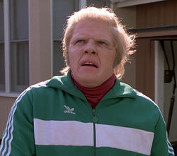

Biff Tannen

Biff Howard Tannen is the main antagonist of the first two Back to the Future movies. He was born in 1937, to Irving Thomas "Kid" Tannen and Myra Benson in Hill Valley, California. Kid and Myra married on December 6, 1936, simply for the purpose of making it seem like Biff wasn't born out of wedlock. The two parted ways immediately after the wedding, and neither parent wanted Biff. Because of this, Tannen's mother, Gertrude Tannen, took custody of him. Before he left his son, Kid gave Gertrude a forged birth certificate that stated that Biff was born on March 26, 1937.
| Biographical information | |
| Date of birth | March 26, 1937 |
| Age (1985) | 48 |
| Physical description | |
| Gender | Male |
| Hair color | Blond |
| Eye color | Blue |